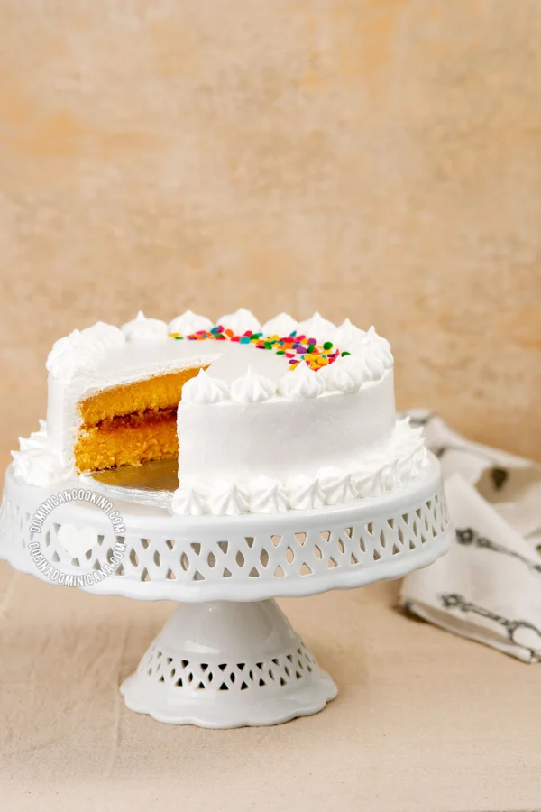

Sin un Pastel (Bizcocho) Dominicano las bodas, cumpleaños y
celebraciones no están completos en nuestro país. Esta es la receta más completa que encontrarás.

Ingredientes
2 cucharadas de mantequilla a temperatura ambiente
2 cucharadas de harina
½ lb [225 gr] de harina de trigo de todo uso
1 ½ cucharadas de polvo de hornear
½ lb [225 gr] de mantequilla con sal
½ lb [225 gr] de azúcar granulada
6 yemas de huevos + suficiente clara para completar ½ lb
[225 gr]
1 cucharadita de ralladura de limón
2 cucharaditas de extracto de vainilla oscura
½ taza de jugo de naranja
Intrucciones
Mide y pesa todos los ingredientes. Déjalos fuera de la
nevera para que estén todos a temperatura ambiente cuando sea el momento de empezar a hornear.
Ten el relleno listo (ver arriba de la receta los enlaces a varias opciones para el relleno). Antes de
empezar: Precalienta el horno a 175ºC [350ºF], o a 163ºC [325ºF] para hornos de convección (ver notas).
Mezcla la harina y el polvo de hornear y tamiza juntos. Divide en tercios y reserva.
Engrasa los moldes de hornear y espolvorea ligeramente con harina. Pon a un lado.
Batir mantequilla: Usando el aditamento de paleta de la
batidora, bate la mantequilla y el azúcar a velocidad media hasta que la mantequilla esté ligera y
esponjosa y tenga un color amarillo muy claro (unos 4 minutos).
Añadir huevos: Añade los huevos de a un tercio cada vez, y
continúa batiendo hasta que cada tercio esté bien incorporado a la mezcla (unos 2 minutos) antes de
añadir el siguiente tercio.
Una vez que añadas los huevos, con la batidora aún a velocidad media, añade la vainilla y la ralladura
de limón.
Agregar jugo + harina: Aumenta la velocidad a media-alta,
y vierte un tercio del jugo, cuando esté bien combinado (unos dos minutos) agrega un tercio de la harina
y mezcla durante otros 2 minutos.
Vierte otro tercio del jugo y mezcla durante otros 2 minutos o hasta que esté muy bien combinado. A
continuación, añade otro tercio de la harina y mezcla durante otros 2 minutos o hasta que esté muy bien
mezclado.
Vierte el último tercio del jugo y mezcla durante otros 2 minutos o hasta que esté muy bien combinado. A
continuación, añade el último tercio de la harina y mezcla durante otros 2 minutos o hasta que esté muy
bien mezclado.
Llenar los moldes: En cuanto hayas dejado de mezclar el
último tercio de harina apaga la batidora, deberías haber obtenido una masa esponjosa con una
consistencia suave y uniforme. Si es necesario, raspa los lados del jarrón de la batidora, y corre un
minuto más para combinar cualquier masa sin mezclar que se haya pegado a los lados.
Vierte la mitad de la masa en cada molde, asegurándote de no perturbar la cubierta de
mantequilla/harina.
Hornear: Hornea 30 minutos, o hasta que un cuchillo
insertado en el centro salga limpio (no abras el horno antes de los 30 minutos). Enfriar a temperatura
ambiente antes de sacarlos de los moldes.
“Esta receta fue copiada de la página
www.cocinadominicana.com”